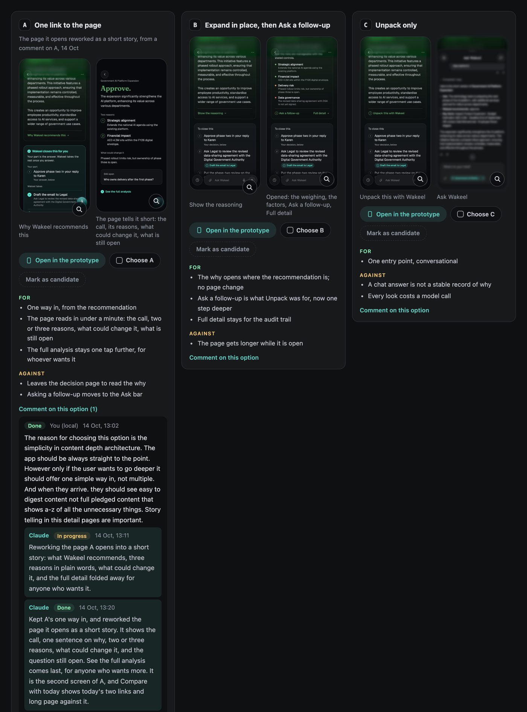

일하는 방식
작게 만들고, 숫자로 판정하고,
기록으로 쌓습니다.
디자인 리더의 일은 좋은 화면 하나를 만드는 것보다, 좋은 화면이 계속 나오는 방식을 만드는 것이라고 생각합니다. 원칙과 리뷰 체계는 6명에서 25명 규모의 팀을 이끌며 다듬었고, 지표와 실험 방식은 지금 제 스튜디오에서 매주 씁니다.
문제 선정부터 기록까지, 여섯 단계를 매주 반복합니다.
- 1
지표 분석
주간 매출을 신규 방문, 결제율, 건당 금액, 1인당 구매 건수로 나눈 지표 트리와 단계별 퍼널에서 이탈이 가장 큰 곳을 고릅니다.
- 2
가설 수립
바꿀 것, 핵심 지표, 가드레일, 판정 날짜, 중단 기준을 적용 전에 변경 로그에 기록합니다. 같은 화면에는 실험을 한 번에 하나만 둡니다.
- 3
직접 구현
시안에서 멈추지 않고 Claude Code로 실제 동작하는 화면까지 만듭니다. 리뷰는 정지 화면이 아니라 직접 조작할 수 있는 화면으로 합니다.
- 4
화면으로 리뷰
출시 전 검수 기준을 정하고, 휴대폰 화면의 넘침과 줄바꿈까지 캡처로 확인합니다. 매출이 걸린 화면은 제가 캡처를 보고 승인합니다. 의견을 리뷰 페이지에 남기면 그 화면을 만든 에이전트에게 바로 전달됩니다.
- 5
A/B 테스트
사용자를 기기 단위로 두 그룹으로 나눠 같은 기간에 비교하고, 핵심 지표와 가드레일을 함께 봅니다. 표본이 작을 때는 모든 지표가 같은 방향을 가리킬 때만 전체에 적용합니다.
- 6
판정과 기록
전체에 적용하거나 되돌리고, 매주 월요일에 변경 사항, 결과, 배운 점, 다음 과제를 하나로 정리합니다.
팀이 같은 기준으로 판단하도록, 원칙을 먼저 세웁니다.
AI의 행동은 승인 뒤에
AI는 사용자 승인 후에만 실행하고, 모든 행동을 기록으로 남깁니다.
아부다비 정부 Anees디자인부터 출시와 운영까지, AI 에이전트에 역할과 권한을 나눠 맡깁니다.
제품은 Claude Code로 화면 설계부터 출시까지 직접 만듭니다. 운영은 역할을 분담한 AI 에이전트가 맡습니다. 우선순위를 정하는 에이전트, 배포 권한을 유일하게 가진 에이전트, 재무, 데이터, 퍼널, 가격 에이전트가 역할별로 작업합니다.
사람이 정하는 것은 가격, 새 유료 채널, 예산 증액 세 가지입니다. 에이전트는 하루 광고 상한, 손실 상한, 예산 변동
사용 중인 도구
- Claude Code
- 실제 앱 코드로 만든 프로토타입
- 자체 A/B 테스트 배분과 판정
- 변경 로그
- 리뷰 페이지와 의견 전달 도구
에이전트는 리포트로 묻고, 저는 페이지 위에서 답합니다.
퍼널, 재무, 가격 에이전트는 정해진 주기로 리포트를 보내고, 화면을 바꾸기 전에는 후보를 나란히 놓은 리뷰 페이지를 만듭니다.
모든 페이지 맨 위에는 어느 에이전트가 피드백을 기다리는지와 만든 시각, 고친 시각이 적혀 있습니다. 페이지 오른쪽 아래 상자에 의견을 쓰면 그 페이지를 만든 에이전트에게 그대로 전달되고, 페이지에서 고른 문장은 인용으로 함께 갑니다. 에이전트가 수십 개여도 어디에 답해야 하는지 헷갈리지 않게 한 장치입니다.
Wakeel에서는 같은 과정이 디자인 허브에서 돌아갑니다. 시안마다 실제 앱 코드로 만들어 두고, 저는 시안 위에 바로 코멘트를 남깁니다.

Wakeel 디자인 허브의 실제 작업 페이지이고, 데이터는 샘플입니다. 화면 하나는 흐리게 처리했습니다. 누르면 크게 볼 수 있습니다.
6명에서 25명까지의 팀을 이끌었고, 그중 세 팀은 직접 신설했습니다.
아부다비 정부 DGE, Product Experience Lead
DGE(Department of Government
Humain, AI Product & Experience Lead
사우디 국가 AI 플랫폼 Humain One에서 6명 규모의 경험 디자인 팀을 신설해 이끌고, 제품 비전과 경험 원칙, 리뷰 체계를 마련했습니다. AI를 처음 쓰는 사람이 실제 업무를 에이전트에게 맡기는 첫 경험을 설계했습니다.
데브시스터즈, Group Director
쿠키런 VR 게임의 기획, 게임 디자인, 제안을 단독으로 시작해 사내 투자를 받았고, 프로덕트, 엔지니어링, 아트, 마케팅 25명 팀을 구성해 Meta Quest Store에 출시했습니다. 회사의 첫 Meta 파트너십을 협상했습니다.
카카오IX 영국법인, Regional Director
8명 팀으로 카카오의 첫 유럽 법인을 세우고, 카카오톡과 카카오프렌즈를 유럽에 소개했으며, 카카오프렌즈의 라이선스와 리테일 파트너십을 맺었습니다.
사우디아람코, UX Lead
12명 UX 팀을 이끌며 전사 디자인 시스템과 UX 가이드라인을 만들어 여러 사업부에 적용했습니다. 사우디 여성의 첫 운전면허 취득을 돕는 디지털 여정 전체를 설계했습니다.
런던 AKQA, Razorfish
Nike(NRC, NTC), Volvo, Barclays, Virgin Atlantic, BNP Paribas Hello